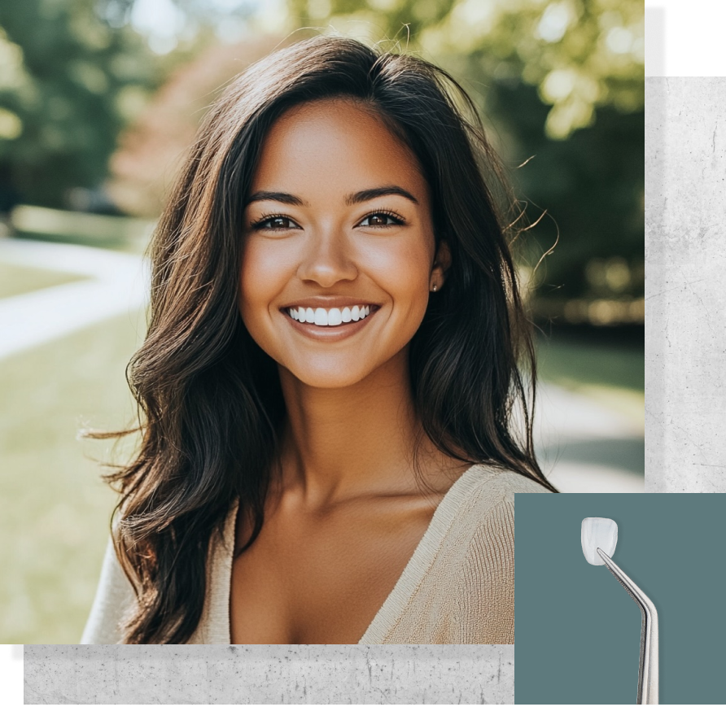

Cosmetic, restorative, and general dentistry, all in one serene Gulch studio. Your doctor walks you through every option so you choose with confidence.

Stained, chipped, worn, or slightly crooked teeth affect more than your smile. They affect your confidence. Our ultra-thin veneers are crafted from IPS e.max and IPS Empress, materials that mimic the properties of natural enamel.
Take the smile assessment on our homepage, or just call and talk it through with us.